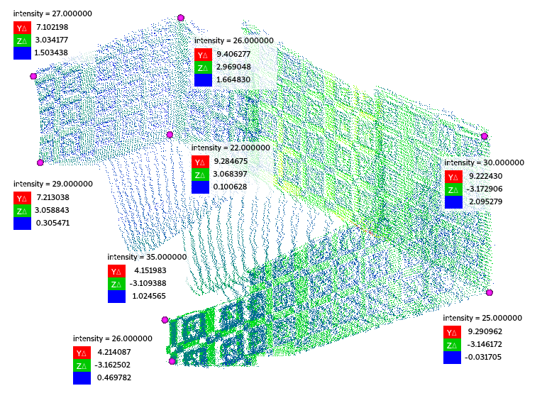
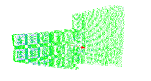

M1 lidar calibration
1. Instructions for use tools
1. Break
Enter the instructions below under the root directory:
source ./setup.sh
./bin/multi_lidar_calib ./config/multi_lidar_calib_config.yaml wheel_base(mm) lidar_calib_data_folder_path
E.G. Taking the data of 10816C 20230424 as an example:
./bin/multi_lidar_calib ./config/multi_lidar_calib_config.yaml 2710 ../data/10816C/20230424/calibration/pcd/
The calibration log will be stored in lidar_calib_data_folder_path/lidar_calib_log/ The calibration result will be stored in lidar_calib_data_folder_path/lidar_calib_result/ There are two files in the calibration result: lidar_extrinsic.yaml , lidar_to_vehicle_extrinsic.yaml The first file is the external parameters of lidar under the world coordinate system, and the second file is the external parameter of lidar under the sensor coordinate system
Multi_lidar_config.yaml parameter description:
enable_debug_mode : Whether to turn on the debug mode and print some debugging information to the Terminal, the default is
enable_visualization : Whether the visual window pops up during the calibration process, the default is closed
enable_plane_filter : Whether to turn on the calibration data quality inspection and noise removal, the default is opened
vehicle_installed_ruby : Main Lidar installed sensor model is Ruby-128 vehicle list
T_v_w : It is used to convert the calibration parameter from the world coordinate system to the transformation matrix of the self -car coordinate system
Get version information:
./bin/multi_lidar_calib -v
2. Outdoor scene
./lidar_to_lidar_calib --data=/home/fih1szh/Pictures/bosch_calibration_data/calibration_room/11139C/20230509 --position=1,2,3,4 --parent=main --child=front,left,right --save=true --icp=true
===== extrinsic front to vehicle =====
ICP_fitness_score:0.0461713 position:1
# XYZ Euler Angle in degree: -1.16339 0.709419 -0.0415995
data: [0.999923, 0.000726045, 0.0123813, 1.66312,
-0.000977345, 0.999793, 0.0203021, 0.0133587,
-0.012364, -0.0203126, 0.999717, 1.51255,
0, 0, 0, 1]
roll : -1.219 -> -1.163
0.055
pitch: 0.751 -> 0.709
-0.041
yaw : -0.177 -> -0.042
0.135
x : 1.699 -> 1.663
-0.036
y : 0.002 -> 0.013
0.011
z : 1.480 -> 1.513
0.032
===== extrinsic left to vehicle =====
ICP_fitness_score:0.0509673 position:1
# XYZ Euler Angle in degree: 0.928035 0.469331 15.1845
data: [0.965055, -0.261919, 0.00819128, 3.54185,
0.262022, 0.964926, -0.016196, 0.670917,
-0.00366198, 0.0177763, 0.999836, 0.688183,
0, 0, 0, 1]
roll : 0.999 -> 0.928 -0.071
pitch: -0.407 -> 0.469 0.876
yaw : 14.855 -> 15.184 0.330
x : 3.581 -> 3.542 -0.039
y : 0.681 -> 0.671 -0.010
z : 0.532 -> 0.688 0.156
===== extrinsic right to vehicle =====
ICP_fitness_score:0.0507343 position:3
# XYZ Euler Angle in degree: 0.174744 -0.181263 -13.9724
data: [0.970407, 0.241454, -0.00316385, 3.56028,
-0.241463, 0.970406, -0.00304984, -0.617656,
0.00233382, 0.00372355, 0.999991, 0.551353,
0, 0, 0, 1]
roll : -0.188 -> 0.175
0.363
pitch: -0.485 -> -0.181
0.304
yaw : -13.655 -> -13.972
-0.318
x : 3.607 -> 3.560
-0.047
y : -0.683 -> -0.618
0.066
z : 0.509 -> 0.551
0.042
2. Instructions for the use of quality inspection tools
The quality inspection of the M1 LIDAR calibration data is integrated into the Lidar Calib Tool V1.2.0
You can Zhongtong in Multi_lidar_Calib_config.yaml Configuration
enable_plane_filter To control the turning/off of the change function
There are two steps in quality inspection tools: filter + data Quality inspection
Step1: filter
The PCD data is analyzed before processing the data. At present, only one format is supported. After statistics from historical calibration data, the most common format is selected. I hope that in subsequent data collectionConsistency of data format
// FIELDS x y z intensity ring timestamp
// SIZE 4 4 4 1 2 8
// TYPE f f f u u f
-If if there is no problem in the format, the data will be filtered to remove noise, and the generated files generate lidarName_remove_noise.pcd It will be stored in lidar_calib_log. The data will be used to calibrate when calibration
-If the format of the calibration data is inconsistent with the above, the quality inspection will be suspended, and the original calibration data is read for calibration
Step2: Data Quality Inspection
Analyze the point cloud data that removes noise, and determine whether there is a large gap at the seams of the five channels of clouds.
If there is a large gap, the relevant information will be printed in the terminal and log files:
If there is a problem with the quality inspection, it will only be reflected in the information printed by the terminal, which will not affect the subsequent calibration process
|
lidar |
front |
left |
right |
|
Before filtering |
|
|
 |
|
After noise reduction (Eliminate the influence of the calibration pattern) |
|
|
|
|
Index indicator at the seam of the area
Extract the overlapping part of the two areas Automatic inspection area order (TODO: Sorting) |
|
|
|
Automatically divide the ground and wall surface for plane fitting, indicator:
Point cloud thickness (inner point rate) ±5cm
Vertical verification of the method of law
|
lidar |
left wall |
front wall |
left wall |
ground |
|
front |
|
|
 |
|
|
left |
|
|
|
|
|
right |
|
|
|
|
Logos
-----right lidar calib log-----
[pre process] data qulity check and remove noise
[CheckQuality] max ring value: 4
[FilterPointCloudByROI] 78327 -> 15114 19.296%
[FitPlane] right_ground.pcd: 53.2156(8043/15114) [0.00219801, -0.00315017, 0.999993]
[FilterPointCloudByROI] 78327 -> 7457 9.52034%
[FitPlane] right_wall_left.pcd: 83.7334(6244/7457) [-0.0249973, -0.998033, -0.0574946]
[FilterPointCloudByROI] 78327 -> 23549 30.065%
[FitPlane] right_wall_front.pcd: 80.3431(18920/23549) [0.99938, -0.0309612, -0.0167573]
[FilterPointCloudByROI] 78327 -> 0 0%
[FilterAndFitPlane] right_wall_right0 less than 1000
Angel btw ground and wall_left: 1.51636
Angel btw ground and wall_front: 1.55633
Angel btw ground and wall_right: -nan
Angel btw wall_front and wall_left: 1.56391
Angel btw wall_front and wall_right: -nan
intensity threshold: 30
[CheckQuality] filtered cloud points ratio: 37.5043 (29376/78327)
[pre process] processed data path: /home/wzi2wx/Repo/xcalib-eng/zigzag/10816C/20230424/calibration/pcd/lidar_calib_log/right_remove_noise.pcd
ring_0:3.66279 ring_1:3.47134 distance:0.191453
[FitPlane] right_1-2: 99.7096(1030/1033) [0.989261, 0.140232, -0.0411908]
ring_1:5.05463 ring_2:5.25318 distance:0.198551
[FitPlane] right_2-3: 99.9432(1761/1762) [0.957177, 0.289286, -0.0111772]
ring_2:5.52543 ring_3:5.03404 distance:0.491393
[FitPlane] right_3-4: 67.801(777/1146) [0.202838, -0.979102, -0.0147038]
[CheckQuality] fatal error : right_3-4 intrinsic issue, ratio is lower than: 0.67801 < 0.75
ring_3:-1.96751 ring_4:-2.00686 distance:0.0393591
[FitPlane] right_4-5: 97.5712(2089/2141) [0.21554, -0.976468, -0.00726508]
[pre process] successful
[ReadPcdFile] LOAD PCD FILE: resource/20230214/calib_room_0214_downsample.pcd
[ReadPcdFile] point size: 1500000
[ReadPcdFile] LOAD PCD FILE: /home/wzi2wx/Repo/xcalib-eng/zigzag/10816C/20230424/calibration/pcd/lidar_calib_log/right_remove_noise.pcd
[ReadPcdFile] point size: 29376
[LidarCalib] Calib method P2Plane
[LidarCalib] Start roll pitch z optimization
[ReadPcdFile] LOAD PCD FILE: /home/wzi2wx/Repo/xcalib-eng/zigzag/10816C/20230424/calibration/pcd/right_0.pcd
[ReadPcdFile] point size: 78284
[ground parameters] a=-0.0339111 b=-0.0105108 c=-1.45901 d=-0.99937
ground_z:0.684763m
norm: -0.0232357 -0.00720197 -0.999704
inliner ratio: 79.567
first station calculation result: roll: -0.419724 pitch: 1.32928 ground Z: -125.933
[ReadPcdFile] LOAD PCD FILE: resource/20230214/calib_room_0214_downsample.pcd
[ReadPcdFile] enable downsample
[ReadPcdFile] point size: 72734
[find_point_correspondences] average_dis: 0.02711
Ceres Solver Report: Iterations: 4, Initial cost: 1.267406e+01, Final cost: 1.267296e+01, Termination: CONVERGENCE
[find_point_correspondences] average_dis: 0.0271069
Ceres Solver Report: Iterations: 4, Initial cost: 1.267223e+01, Final cost: 1.267167e+01, Termination: CONVERGENCE
[find_point_correspondences] average_dis: 0.0271065
Ceres Solver Report: Iterations: 18, Initial cost: 1.267125e+01, Final cost: 1.267098e+01, Termination: CONVERGENCE
final pose XYZ Euler angle: roll: -0.419831 pitch: 1.32925 yaw: 166.467 x: -7.48789 y: 0.62426 z: -125.933
calib method: P2Plane
downsample_voxel_size: 0.05
downsample: disable
inlier_rmse: 0.0186351
fitness: 1
ERROR CODE: NO_ERROR
-----right lidar calibrate finished-----